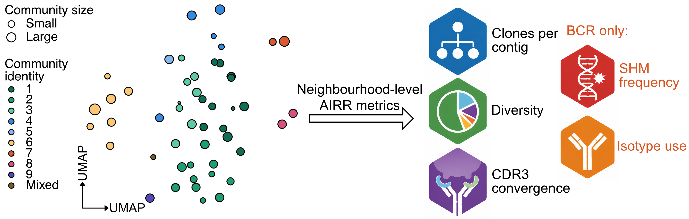
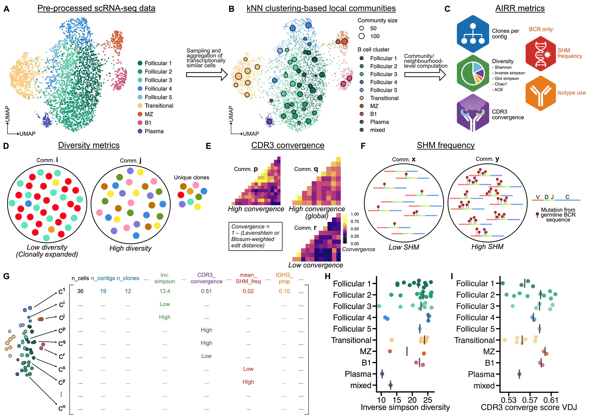

TEVRA (Transcriptome Embedding-Resolved V(D)J Repertoire Analysis) maps immune receptor repertoire features onto transcriptionally defined cell aggregates in single-cell RNA-seq data.

Installation
# install.packages("remotes") #(if required)
remotes::install_github("grace-hattersley/TEVRA")Getting started
See the complete vignette for a full workflow.
TEVRA takes a SingleCellExperiment object that has been pre- processed, including reference alignment, transcript quantification, QC and cell annotation.
Aggregates can be pre-defined via the user’s preferred method e.g., miloR or metacell, or defined by TEVRA’s create_communities() function.
communities <- create_communities(sce_obj,
graph.name = "RNA_snn",
resolution = 5,
min_cells = 5,
feature.col = "nFeature_RNA",
count.col = "nCount_RNA")
sce_obj <- communities$sce AIRR metrics can be computed per aggregate for SingleCellExperiment objects via specifying the column in colData that contains the aggregate ID. The function below calculates clonal diversity metrics per aggregate.
sce_obj <- nhood_diversity(sce_obj,
nhood_col = "community_id", # or metacell_ID, etc.
clone_id_col = "clone",
min_n_contigs = 10,
metrics = c("shannon", "inv.simpson", "gini.simpson", "chao1"),
downsample_method = "rarefaction",
n_boots = 100)For Milo objects, the function will extract the nhoods matrix directly. The function below illustrates this on a function that computes inter-clonal CDR3 convergence per aggregate.
milo_obj <- nhood_cdr3_convergence(object = milo_obj,
nhood_col = NULL,
receptor_type = "BCR",
chain = "both",
aa_col = c(VDJ = "aa_IGH", VJ = "aa_IGL"),
clone_id_col = "clone",
min_n_contigs = 10,
substitution_weighting = "levenshtein",
summary_metric = "converge_score",
downsample = TRUE,
n_boots = 100) Aggregate-level AIRR metrics can then be visualised.
plot_nhood_beeswarm(metadata(sce_obj)$nhood_analysis,
plot_cols = "clones_per_contig",
reliability_col = "diversity_reliable",
group_by = "identity",
summary_metric = "group_median",
colour_by = "identity",
size_by = "nhood_size")For full suite of function, refer to the vignette.
Example workflow

- UMAP of murine splenocyte B cells.
- Community UMAP of murine splenocyte B cells following aggregation. ‘Mixed’ refers to communities where cells do not predominantly (>50%) belong to a single cluster. Point computed as the median UMAP coordinates of all constituent cells of the community. Point size represents the number of cells in the community.
- AIRR metrics that can be computed per community.
- Representative image of low versus high diversity communities.
- Heatmaps demonstrating high local, high global and low CDR3 convergence communities.
- Representative image of low vs high SHM communities.
- Example of output dataframe from TEVRA workflow.
- Inverse Simpson diversity by community, grouped into cell type.
- CDR3 convergence score by community, grouped into cell type. CDR3 convergence scores were computed using Levenshtein edit distances.
Citation
If you use TEVRA, please cite:
Hattersley G, Lee C (2026). <TEVRA: Computes and Maps AIRR Features onto Transcriptionally Defined Cellular Aggregates>. R package version <0.0.0.9000>, https://github.com/grace-hattersley/TEVRA.
Acknowledgements
TEVRA builds on several existing tools.
immApex The diversity formulas used by nhood_diversity() call functions from immApex (Borcherding N et al.). The original copyright notice and licence text are reproduced in inst/COPYRIGHTS.
Borcherding N, et al. (2026). Pre-transplant TCR Network Topology Predicts Kidney Allograft Rejection Independent of HLA Mismatch. bioRxiv. doi: 10.64898/2026.05.04.722749
miloR Neighbourhoods can be constructed using miloR.
Morgan M, Dann E (2026). miloR: Differential neighbourhood abundance testing on a graph. doi: 10.18129/B9.bioc.miloR. R package version 2.8.1, https://bioconductor.org/packages/miloR.
metacell Metacell-based neighbourhoods use metacell.
Tanay A (2021). metacell: Meta cell analysis for single cell RNA-seq data. R package version 0.3.7, https://github.com/tanaylab/metacell.